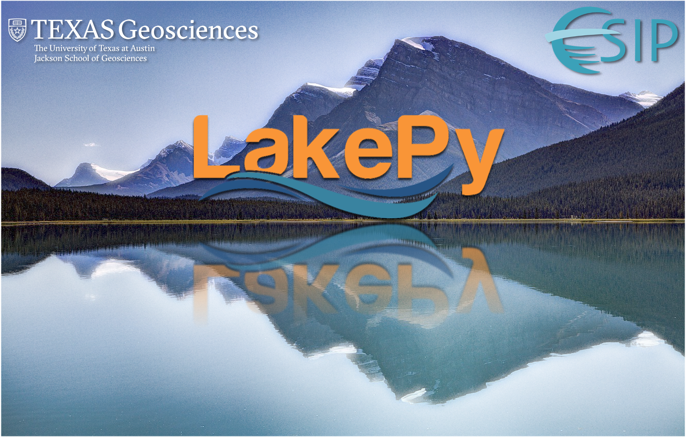

James (Jake) Gearon

| Geomorphologist & Data Scientist | Nature Author Investigating sedimentary landscapes through the lens of data science and remote sensing. Specializing in river avulsions, lacustrine systems, and geospatial data engineering. CV |
GitHub | LinkedIn Contact: jhgearon@iu.edu |
| Research | Publications | Projects | Resources |
James “Jake” Gearon — Research & Curriculum Vitae
This page is a work in progress and is updated continuously, thanks for visiting!
Research Focus
My research harnesses the ongoing data revolution to investigate the statistical, morphodynamic, and scaling properties of sedimentary landscapes: particularly rivers, deltas, and lakes. The goal of this approach is to develop predictive models of complex natural phenomena, which is crucial in the context of natural hazards in a warming world.
The Earth sciences is currently transitioning from a data-poor field to a data-rich one. I use industry-grade geospatial data engineering and applied data science—largely through the lens of remote sensing—to investigate classic problems in geomorphology and sedimentology. My recent work on predicting river avulsions demonstrates how this approach can result in high-impact science with broad appeal.
Key Research Areas:
-
Natural Hazards under Climate Change: Investigating river avulsions and their impact on flooding and infrastructure. Recent avulsions in India alone have displaced millions and damaged agricultural and transportation infrastructure.
-
Ecogeomorphology: Analyzing the interplay between geomorphology and vegetation patterns through big-data approaches. My work includes the largest analysis of creosote shrub distributions to date (~23 million samples).
-
Data Engineering & Machine Learning in Geosciences:
- Developing novel applications of ICESat-2 data for floodplain topography
- Creating BASED (Boost-Assisted Stream Estimator for Depth)
- Building infrastructure for Army Corps of Engineers levee analysis
- Designing LakePy for global lake water level analysis
Publications
-
James H. Gearon, Harrison Martin, Clarke DeLisle, Eric Barefoot, David Mohrig, Chris Paola, and Douglas Edmonds. Rules of river avulsion change downstream [Nature, 2024 (accepted)].
-
James H. Gearon, Cornel Olariu, and Ronald J. Steel. The supply-generated sequence: A unified sequence-stratigraphic model for closed lacustrine sedimentary basins with evidence from the Green River Formation, Uinta Basin, Utah, U.S.A. Journal of Sedimentary Research, 92(9):813–835, 2022.
-
James H. Gearon and Michael H. Young. Geomorphic controls on shrub canopy volume and spacing of creosote bush in northern Mojave Desert, USA. Landscape Ecology, 2020.
-
T. H. Doane, J. H. Gearon, H. K. Martin, B. J. Yanites, and D. A. Edmonds. Topographic roughness as an emergent property of geomorphic processes and events. AGU Advances, 5(5), 2024.
-
Puyu Liu, Chenglin Gong, James H. Gearon, et al. Increased sediment connectivity between deltas and deep-water fans in closed lake basins: A case study from Bozhong Sag, Bohai Bay Basin, China. Sedimentary Geology, 2023.
-
Joseph S. Levy, Thomas F. Subak, Ian Armstrong, […], James H. Gearon, et al. Martian chaos terrain fracture geometry indicates drainage and compaction of laterally heterogeneous confined aquifers [In Review at Icarus].
Current Research
River Avulsions and Natural Hazards
My latest work involves an overlooked natural hazard: river avulsions. I’ve developed a novel theoretical framework that identifies which rivers are vulnerable to avulsion and predicts the path of an avulsing river. This research has significant implications for flood prediction and mitigation in a changing climate.

Continue reading about Avulsion Research…
The Supply-Generated Sequence
Master’s Project | A New Sequence-Stratigraphic Model for Fluvio-Lacustrine Deposits

Continue reading about the Supply-Generated Sequence…
Remote Sensing & Data Engineering
LakePy: Global Lake Water Level Database
Earth Science Information Partners (ESIP) Winter 2020 Grant 
Geomorphic Controls on Vegetation
Mojave Desert Creosote Bush Study
Resources
Page template forked from evanca